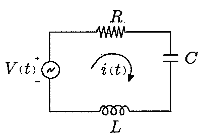
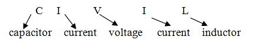
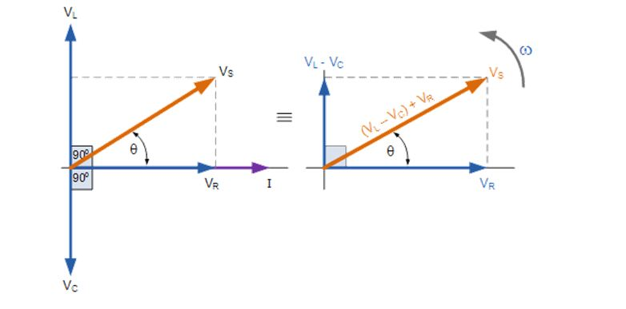

When resistor, inductor and capacitor are connected in series across a voltage supply, the circuit so obtained is called series RLC circuit.
Phasor Diagram of Series RLC Circuit
The phasor diagram of series RLC circuit is drawn by combining the phasor diagram of resistor, inductor and capacitor. Before doing so, one should understand the relationship between voltage and electric current in case of resistor, capacitor and inductor.

Phasor Diagram of Series RLC Circuit
- Resistor - In case of resistor, the voltage and the electric current are in same phase or we can say that the phase angle difference between voltage and electric current is zero.
- Inductor - In inductor, the voltage and the electric current are not in phase. The voltage leads that of electric current by 90° or in the other words, voltage attains its maximum and zero value 90° before the electric current attains it.
- Capacitor - In case of capacitor, the electric current leads the voltage by 90° or in the other words, voltage attains its maximum and zero value 0° after the electric current attains it i.e the phasor diagram of capacitor is exactly opposite of inductor.
- RLC circuit - For drawing the phasor diagram of series RLC circuit, follow these steps:
Phasor Diagram of Series RLC Circuit
Phasor Diagram of Series RLC Circuit
NOTE: For remembering the phase relationship between voltage and current, learn this simple word called 'CIVIL', i.e in capacitor electric current leads voltage and voltage leads electric current in inductor.

Step - I. In case of series RLC circuit; resistor, capacitor and inductor are connected in series; so, the electric current flowing in all the elements are same i.e I r = Il = Ic = I. For drawing the phasor diagram, take electric current phasor as reference and draw it on horizontal axis as shown in diagram.
Step - II. In case of resistor, both voltage and electric current are in same phase. So draw the voltage phasor, VR along same axis or direction as that of electric current phasor i.e VR is in phase with I.
Step - III. We know that in inductor, voltage leads electric current by 90° so draw Vl (voltage drop across inductor) perpendicular to electric current phasor in leading direction.
Step - IV. In case of capacitor, the voltage lags behind the electric current by 90° so draw Vc (voltage drop across capacitor) perpendicular to electric current phasor in downwards direction.
Step - V. For drawing the resultant diagram, draw Vc in upwards direction. Now draw resultant, Vs which is vector sum of voltage Vr and VL - VC.

Impedance for a Series RLC Circuit
The Impedance for a Series RLC Circuit
The impedance Z of a series RLC circuit is defined as opposition to the flow of current, due to circuit resistance R, inductive reactance, XL and capacitive reactance, XC. If the inductive reactance is greater than the capacitive reactance, i.e XL > XC, then the RLC circuit has lagging phase angle and if the capacitive reactance is greater than the inductive reactance, i.e XC > XL then the RLC circuit have leading phase angle and if both inductive and capacitive are the same, i.e XL = XC then circuit will behave as purely resistive circuit.
We know that,
Substituting the values VS2 = (IR)2 + (I XL - I XC )2
From this impedance triangle: by using Pythagoras theorem we get;
Variation in Resistance, Reactance and Impedance with Frequency
Variation of resistance and reactance with frequency
In series RLC circuit, three types of impedance are involved-
- Electrical resistance - Resistance is independent of frequency, so it remains constant with change in frequency.
- Inductive reactance, XL - We know that XL = 2πfL so, inductive reactance varies directly with frequency. So the graph between frequency and inductive reactance is a straight line passing through the centre as shown by curve
a
. - Capacitive reactance, XC - From the formula of capacitive reactance, XC = 1/ 2πfC so, capacitive reactance varies inversely with frequency. Since the net reactance is ( XL - XC). So for drawing curve of ( XL - XC), firstly draw the graph of ( -XC) which is shown by curve
b
and then draw a curve for net reactance which is shown as curvec
. - The total impedance of circuit is shown by curve
d
which is obtained by adding constant resistor value to the net reactance.
 by
by {kind=link}
{kind=link}
{kind=link}
{kind=link}
{kind=link}
{kind=link}